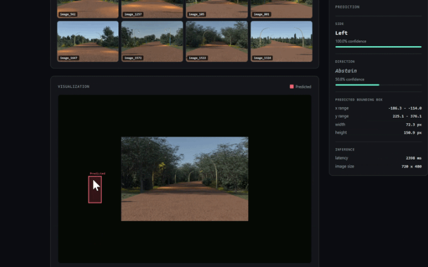
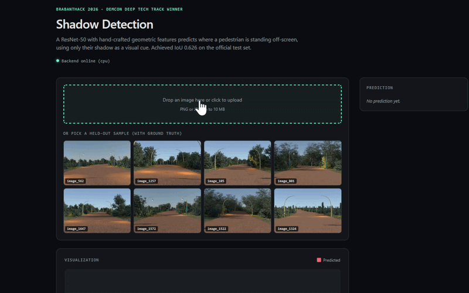
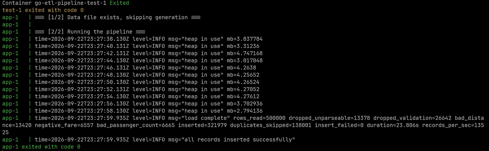

sMAPE on the Kaggle private leaderboard, drawn on the full 0–40% scale. Lower is better.
The plants sit in fixed positions and the dish never moves, so adaptive detection solved a problem this dataset did not have.
go-etl-pipeline
Memory that ignores the file.
Bytes read against bytes resident. Three orders of magnitude apart, so the axis is logarithmic.
Log scale, because on a linear one 5.2 MB is a third of a pixel beside 2.3 GB. The CSV is consumed row by row, so the heap never learns how large the file is.
Six projects, end to end.
Built for external clients or to hackathon deadlines; two are solo work.
Schematic — not model output. Plate imagery is NPEC's; this draws the three stages the pipeline runs.
0.8371 F1, 0.7199 IoU on 20,512 held-out test patches.
How it works
Researchers correct predictions in the UI. A daily DAG merges the corrections into training data while keeping the test set frozen, retrains, and puts the candidate through two independent gates.
Scope
Airflow orchestration, the Azure ML job layer, the feedback flywheel and the promotion gate.
Limitation
The university-provisioned Azure and on-premise environments are decommissioned; the local Compose stack is the reproducible path.
01Correctionsresearchers flag predictions in the UI
02Retrainmerged in, test set frozen
03F1 gateclears the threshold on held-out
04Registrythe candidate is versioned
05Champion gatemust beat what is already serving
06Trafficonly now does it serve
Registered, never promotedclears 03, loses 05
Passing an offline threshold is not the same as being better than production. A candidate can enter the registry and never take traffic.
10.7% sMAPE on the Kaggle private leaderboard; 0.646 mm mean positioning across 50 targets.
How it works
Segmentation finds root tips, skeletonisation measures length, an affine transform maps pixels to robot coordinates, and a PID controller drives the pipette. The first pipeline scored 37.6% sMAPE; the rewrite scored 10.7%, and it was mostly subtraction.
Limitation
PID and PPO were measured on different simulators, so their error figures are not directly comparable.


Predicted box spans x −186.3 to −114.0 px — entirely left of zero, because the person is not in the picture.
DEMCON Deep Tech · with Oleksii Krasnoshtanov and Danil Sysenko
Geometric-feature ablation
Drawn on the full 0–1 scale rather than a zoomed one, which is why a decisive gain looks as small as it is.
IoU 0.626 on the hidden leaderboard — the winning submission.
How it works
Only the shadow reaches the image. The x-distribution is bimodal, so the target is decomposed: a classifier picks the side, a regressor learns offsets from that edge, and 19 geometric features fuse with the ResNet-50 embedding.
Scope
The three-head architecture, the 19 features, flip-aware augmentation and the TTA inference path.
Limitation
The direction head abstains on every input, and training data is entirely synthetic.
04 / 06 · Personal
2.3 GB through a 4 MB heap, and an answer for every missing row.
A staged pipeline wired by channels, reading row by row so memory is independent of file size. Every row is attributed to the stage that consumed it, and a run whose ledger does not balance exits non-zero rather than reporting success.
Where 500,000 rows went · one run, to scale
321,979inserted · 64.40%
138,001duplicates skipped · 27.60%
26,642failed validation · 5.33%
13,378unparseable · 2.68%
Every row is attributed to the stage that consumed it. The four outcomes sum to exactly 500,000, and the validation slice balances too: 13,420 bad distance + 6,557 negative fare + 6,665 bad passenger count = 26,642. A run whose ledger does not balance exits non-zero.

A 500,000-row test run; the 2.3 GB benchmark above is a separate run. Heap holds between 2.79 and 4.75 MB throughout. Reading the throughput field precisely: records_per_sec=13525 counts inserted rows (321,979 ÷ 23.806 s); rows read per second was 21,003.
Flat 2.8–5.2 MB heap across a 2.3 GB, 27.6M-record file at roughly 41,000 records/sec.
How it works
Limitation
The 5.7× enrichment figure needs a source constant raised, so reproducing it means rebuilding.
CI asserts the Charter Type 1 binaries are installed, fails on any overfull box, then re-extracts the PDF with pdfplumber and asserts it still parses into the sections an ATS looks for.
Limitation
Charter's 2.77 pt interword gap sits under pdfplumber's 3.0 pt default, so some parsers may merge adjacent words.